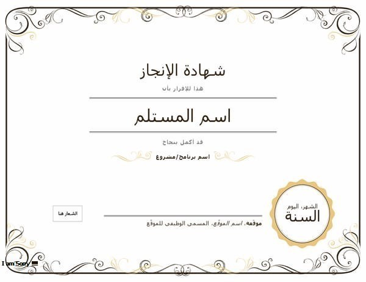
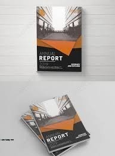
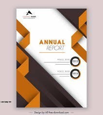

تفاصيل عنا
قوالب شهادات خبره تناسب كافة التخصصات
مصممي منصة تصميمك عملوا جاهدين على توفير العديد من قوالب الشهادات الرائعة التي تتناسب مع كافة التخصصات والمجالات، والتي ستغنيك عن البحث عن نماذج وورد أو pdf

تفاصيل عنا
لغة كتابة المقالات، وتتضمن كتابة التقرير على أقسام فرعية، لكل قسم عنوانه الرئيسي وعناوين فرعية، فيمكن أن يكون القسم الواحد عبارة عن نقاط متعددة مرقمة وغير مرقمة وبعضها يمكن أن يكون عبارة عن جمل إنشائية، وتكون الفقرات أقصر مما عليه في المقالات، ويصنف كلاً من التقرير والمقال بأنّهما كتابات أكاديمية، وعليه يُتوقع من الكاتب مراعاة القواعد اللغوية، والبناء اللغوي، والمفردات وعلامات الترقيم، وتعدّ الكتابة الأكاديمية هي كتابة رسمية، فلا بد من تجنب الاقتباسات والكتابة بالطريقة المختصرة لبعض الكلمات كما هو شائع استخداماً في اللغة الإنجليزية.
وهذا ما يتم تنفيذه ليتناسب مع تقريرك

تفاصيل عنا
عمل ابحاث وتقرير
عمل شهادات
عمل كل واي شئ يتم طباعته
